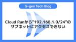
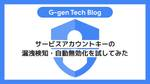

G-gen Tech Blog
https://blog.g-gen.co.jp/
Google Cloud(旧称GCP)の情報発信を行う技術ブログ
フィード

Cloud Runから"192.168.1.0/24"のサブネットにアクセスできない
G-gen Tech Blog
G-gen の佐々木です。当記事では Cloud Run から VPC ネットワークに接続する際の、宛先サブネットの IP アドレス範囲に関する注意点を紹介します。 宛先サブネットの IP アドレス範囲に関する既知の問題 ドキュメントの記載 代表的なケース 例外 対処法 プライベート IP アドレスを使用する場合 リソースを作り直す Compute Engine VM をプロキシとして使用する パブリック IP アドレスを使用する場合 宛先サブネットの IP アドレス範囲に関する既知の問題 ドキュメントの記載 2024年3月の時点では、Cloud Run のドキュメントには以下のような記載があ…
3日前

サービスアカウントキーの漏洩検知・自動無効化を試してみた 5
5
G-gen Tech Blog
G-gen の杉村です。Google Cloud では、「サービスアカウントキーの漏洩レスポンス（Service account key exposure response）」という組織ポリシーの制約により、サービスアカウントキーがパブリックな Git レポジトリ等に漏洩した場合でも、自動的に検知され、キーが無効化されます。当記事では意図的にキーを漏洩させた場合の検証結果をご共有します。 キーの漏洩検知・無効化の自動化 有効化 設定画面へ遷移 制約を有効化 GitHub のパブリックレポジトリにキーを push 自動検知と無効化の確認 メールでの通知 WAIT_FOR_ABUSE の場合の挙動…
9日前
GitHubで実現するConfig Controllerによるリソース管理の自動化
G-gen Tech Blog
G-gen の武井です。 当記事では GitHub と Config Controller (Config Sync) を連携して Google Cloud (旧称 GCP) のリソース管理を自動化する方法について解説します。 当記事について 位置付け 前提知識 関連記事 変更点 概要 GitOps パイプラインの構成 アーキテクチャ 変更前の構成 変更後の構成 実装手順 概要 事前準備 Config Controller の設定 GitOps パイプラインの設定 source-repositories.yaml の編集 setters の定義 gitops/configsync/setter…
10日前

Google Workspaceアカウント間でGmailデータを移行する
G-gen Tech Blog
G-gen の荒井です。当記事では「データの移行（新規）」機能を使用して、Google Workspace アカウント間でメールデータを移行する方法をご紹介します。 機能の概要 仕様と制約 移行タイミングと対象データ 制約 移行手順 概要 手順1 : コンソールへアクセス 手順2 : 委任リクエストを送信 手順3 : 委任リクエストの確認 手順4 : 委任リクエストを承認 手順5 : 委任承認の確認 手順6 : csv アップロード 手順7 : 移行設定 手順8 : 移行の実行 機能の概要 「データの移行（新規）」は、Google Workspace のアカウントの Gmail データを、自組…
16日前
gcloud CLIのインストール方法（Windows 編）
G-gen Tech Blog
G-gen の荒井です。gcloud CLI（Cloud SDK）を Windows OS にインストールする手順をご紹介します。 はじめに Windows OS への gcloud CLI (Cloud SDK) インストール 前提条件 インストール手順 追加コンポーネントのインストール はじめに Google Cloud を操作するための代表的なインターフェイスとして、Cloud Console（GUI）と gcloud CLI があります。 Cloud Console（GUI）は、Web ブラウザで操作可能な、Google Cloud の管理コンソールです。直感的に操作することができ、初…
17日前
VPC Service Controlsのドライランモードについて解説
G-gen Tech Blog
G-gen の武井です。当記事では VPC Service Controls のドライランモードについて解説します。 はじめに VPC Service Controls とは ドライランモード ドライランモードの仕組み ドライランモード 概要 構成 設定項目 Access Context Manager 設定 権限 アクセスレベル 境界 (ドライランモード) 実例解説 評価の流れ 実例1 ログ確認 原因の特定 詳細確認 考察と対応 実例2 ログ確認 原因の特定 詳細確認 その1 詳細確認 その2 考察と対応 最後に 関連記事 はじめに VPC Service Controls とは VPC S…
22日前
BigQuery Data Transfer Serviceのデータセットコピーを解説
G-gen Tech Blog
G-gen の杉村です。当記事では、BigQuery Data Transfer Service で提供される、データセットコピー機能を解説します。 BigQuery Data Transfer Service とは データセットコピー機能とは ユースケース 認証・認可 データ転送の挙動 注意点 ストレージ料金 複製の対象外のリソース BigQuery Data Transfer Service とは BigQuery Data Transfer Service は、外部から BigQuery へのデータ転送を自動化する Google Cloud（旧称 GCP）のフルマネージドサービスです。フ…
23日前
Gmailでシステムからメール送信する方法（グループアドレス編）
G-gen Tech Blog
G-gen の荒井です。当記事ではプリンタ、スキャナ、アプリなどのシステムからメールを送信する方法をご紹介します。 はじめに ユースケース 前提知識 プリンタ、スキャナ、アプリからのメール送信 グループアドレス 構成 構成図 留意事項 別のアドレスからメールを送信する上限 アカウント管理 グループ管理 システムの設定項目 設定手順 概要 手順 1 : グループ作成 手順 2 : アカウント作成 手順 3 : グループアドレスでメールを送信する設定 手順 4 : 2段階認証設定 手順 5 : アプリパスワード作成 手順 6 : メール送信システム設定 はじめに Google Workspace …
24日前
2024年2月のイチオシGoogle Cloudアップデート
G-gen Tech Blog
G-gen の杉村です。2024年2月のイチオシ Google Cloud アップデートをまとめてご紹介します。記載は全て、記事公開当時のものですのでご留意ください。 はじめに Meet で参加者全員向けに画面のピン留めができるように Cloud Logging から Cloud Storage へのエクスポート Cloud Translation で Adaptive Translation が Preview => GA（Preview） Google Meet API が Preview => GA Google アカウントのログイン画面の UI が変更に Gemini Enterpri…
1ヶ月前
Gmailでシステムからメール送信する方法（メールエイリアス編）
G-gen Tech Blog
G-gen の荒井です。当記事ではプリンタ、スキャナ、アプリなどのシステムからメールを送信する方法をご紹介します。 はじめに ユースケース 前提知識 プリンタ、スキャナ、アプリからのメール送信 メールエイリアス 構成 構成図 留意事項 エイリアス数上限 アカウント管理 システムの設定項目 設定手順 概要 手順 1 : アカウント作成 手順 2 : エイリアス設定 手順 3 : エイリアスでメールを送信する設定 手順 4 : 2段階認証設定 手順 5 : アプリパスワード作成 手順 6 : メール送信システム設定 はじめに Google Workspace はユーザーライセンスサービスのため、原…
1ヶ月前
Geminiを搭載したVertex AI SearchでGoogle Chatのチャットボットを作成してみた
G-gen Tech Blog
G-gen の堂原です。Gemini を搭載した Vertex AI Search を用いて、Google Chat のチャットボットを作成してみましたので、紹介します。 はじめに 前提知識 Vertex AI Search Google Chat API 構成図 Vertex AI Search の設定 Cloud Functions の設定 パラメータ ソースコード requirements.txt main.py import 認証 Gemini Pro の指定 Google Chat API の設定 添付 : ソースコード はじめに 当記事では、Google Cloud（旧称 GCP）…
1ヶ月前
PaLM 2で同じ文章が何度も繰り返される事象への対処法
G-gen Tech Blog
G-gen の佐々木です。当記事では、生成 AI モデルである PaLM 2 のチャットボットを構築した際に、モデルからの回答文で同じ文章が何度も繰り返されてしまう事象の解決策を紹介します。 前提知識 事象 解決策 Frequency Penalty パラメータ サンプルコード Frequency Penalty の調整 前提知識 PaLM 2 は Google が開発した生成 AI モデルです。Google Cloud の機械学習サービスである Vertex AI で PaLM API として公開されており、生成 AI を使用したチャットボットの構築などに使用することができます。 PaLM …
1ヶ月前
Pub/SubのBigQueryサブスクリプションを使ってみた
G-gen Tech Blog
G-gen の杉村です。Pub/Sub の BigQuery サブスクリプションを使うと、Pub/Sub に対して発行したメッセージを簡単に BigQuery テーブルに書き込むことができます。 前提知識 BigQuery サブスクリプションとは テーブルスキーマの利用 テーブルの作成 Pub/Sub トピックの作成 Pub/Sub サブスクリプションの作成 メッセージ送信のテスト BigQuery テーブルの確認 前提知識 BigQuery サブスクリプションとは Pub/Sub は、Google Cloud（旧称 GCP）のフルマネージドなメッセージングサービスです。Pub/Sub の意義…
1ヶ月前
Google Workspaceで使用するDNSレコードを解説
G-gen Tech Blog
G-gen の荒井です。Google Workspace では、初期設定の際にいくつかの DNS レコードの登録が必要です。本記事では Google Workspace で使用する DNS レコードについて解説します。 前提知識 DNS ドメイン ゾーン レコード 名前解決 TTL Google Workspace で使用するレコード 概要 TXT レコード CNAME レコード MXレコード A レコード DNS の詳細 メールセキュリティに関するレコード 概要 SPF レコード DKIM レコード DMARC レコード 前提知識 DNS DNS はドメインネームシステム（Domain Na…
1ヶ月前
Cloud Loggingの運用上のTips集
G-gen Tech Blog
G-gen の藤岡です。当記事では、Google Cloud (旧称 GCP) の Cloud Logging の Tips を紹介します。 Cloud Logging とは ログカテゴリと保存先 全体像 カテゴリ 保存先 保持期間 料金 2 つの料金軸 節約時のログ精査方法 ログエクスプローラー Duet AI データアクセス監査ログ利用時 有効は継承される 閲覧には追加権限が必要 参考記事 Cloud Logging とは Cloud Logging (旧称 Stackdriver Logging) は Google Cloud 上のシステム等が生成したログを収集、保管、管理するサービスで…
1ヶ月前
Document AIを徹底解説
G-gen Tech Blog
G-gen の片岩です。当記事では文書のデジタル化と解析を自動化するサービスである Document AI について解説します。 概要 Document AI とは ユースケース 利用方法 対応フォーマット プロセッサ プロセッサとは 汎用プロセッサ OCR プロセッサ Form パーサー 専用プロセッサ カスタムプロセッサ カスタムドキュメントエクストラクタ カスタムドキュメント分類器 カスタムドキュメントスプリッター サマライザ トレーニング Document AI におけるトレーニング カスタムドキュメントエクストラクタにおけるトレーニング 従来型トレーニングを利用したトレーニング 生成…
1ヶ月前
SlackへリアクションするとGoogle Tasksに自動登録される仕組みを作ってみた
G-gen Tech Blog
G-gen の三木です。Slack 投稿をもとに、気楽に Google Tasks の ToDo リストへタスクを追加したいと思ったので、Zapier を使って自動化してみました。 作ったもの 課題感 Google カレンダーの ToDo リスト機能 登録が面倒 ソリューション アーキテクチャ 手順 1. Slack emojiを作成 2. emoji を追加 3. Zapier と Slack を連携 4. Zap の作成 5. Zap の設定 (Trigger) 6. Zapの設定(Action) 7. テスト 今後の課題 誰が emoji をつけてもタスクが増える タスクに自動で期限をつ…
2ヶ月前
Cloud RunからAlloyDBにパブリックIPアドレスで接続する
G-gen Tech Blog
G-gen の佐々木です。当記事では AlloyDB for PostgreSQL でパブリック IP アドレスを有効化して、Cloud Run からの接続を試してみます。 前提知識 AlloyDB と Cloud Run パブリック IP アドレスを使用した AlloyDB への接続 Cloud Run から AlloyDB への接続 Cloud Run jobs からの接続 VPC の作成 AlloyDB の作成 AlloyDB クラスターの作成 AlloyDB インスタンスの作成 サービスアカウントの作成 パブリック IP アドレスを有効化 データベースの作成 踏み台 Compute E…
2ヶ月前
Personalized Service Healthを徹底解説
G-gen Tech Blog
G-gen の杉村です。Personalized Service Health は、Google Cloud の障害を特定、通知するサービスです。このサービスについて、徹底解説します。 Personalized Service Health とは 対応プロダクト インシデント インシデントとは Relevance（影響度） 有効化 アラート通知 Personalized Service Health とは Personalized Service Health とは、Google Cloud（旧称 GCP）の障害を特定したり、通知したりするためのサービスです。このサービスの利用に、料金は発生し…
2ヶ月前
2024年1月のイチオシGoogle Cloudアップデート
G-gen Tech Blog
G-gen の杉村です。2024年1月のイチオシ Google Cloud アップデートをまとめてご紹介します。記載は全て、記事公開当時のものですのでご留意ください。 はじめに GmailへのDMARC設定方法 BigQuery に Document AI が統合 Google Cloud、解約時のデータの外部転送料金を無料に textembedding-gecko でチューニングが Preview => GA Vertex AI Workbench で User Managed Notebook と Managed Notebook が廃止 Cloud Build のサービスアカウントの挙動…
2ヶ月前
gcloud auth loginとgcloud auth application-default loginの違いとは？
G-gen Tech Blog
G-gen の武井です。当記事では Google Cloud SDK の2つの認証コマンドの違いについて解説します。 はじめに 2つの認証用コマンド gcloud auth login gcloud auth application-default login 違い 検証 シナリオ 検証パターン 実行環境 プログラムのソースコード 検証結果 パターン #1 パターン #2 パターン #3 パターン #4 まとめ 検証結果 補足1 (認証情報の格納場所) 補足2 (認証コマンドの実行方法) 関連記事 はじめに 2つの認証用コマンド gcloud auth login と gcloud auth …
2ヶ月前
Cloud RunでCloud Storageバケットをマウントする
G-gen Tech Blog
G-gen の佐々木です。当記事では Cloud Run で Cloud Storage バケットをボリュームマウントする方法を解説します。 前提知識 Cloud Run とは Cloud Storage（GCS）とは ネイティブ機能によるマウント Cloud Storage バケットの作成 バケットにテキストファイルをアップロード Artifact Registry リポジトリの作成 使用するコード Cloud Run サービスの作成 CLI で Cloud Run サービスを作成する場合 YAML ファイルから Cloud Run サービスを作成する場合 動作確認 前提知識 Cloud R…
2ヶ月前
VPC Service Controlsのリソース構成を図解
G-gen Tech Blog
G-gen の藤岡です。当記事では、Google Cloud (旧称 GCP) の VPC Service Controls を設定する際に登場する、アクセスポリシーやアクセスレベルについて解説します。 前提知識 全体像 サービス境界 アクセスポリシー アクセスレベル 前提知識 VPC Service Controls は Access Context Manager サービスを基盤としたセキュリティ機能の 1 つであり、Access Context Manager API 経由でリソースが管理されます。VPC Service Controls の解説については以下の記事をご参照ください。 b…
2ヶ月前
Cloud Buildサービスアカウントが仕様変更（2024年4月29日から）
G-gen Tech Blog
G-gen の藤岡です。これまでデフォルトの Cloud Build サービスアカウントとして使われていた <PROJECT_NUMBER>@cloudbuild.gserviceaccount.com の仕様が2024年4月29日から変更されます。当記事では、変更点とその影響について詳しく解説します。 この変更は2024年1月16日に発表されたばかりであり、今後より詳細な情報が出てくる可能性がありますので、新しい発表があり次第、随時更新します。 前提知識 Cloud Build とは デフォルトの Cloud Build サービスアカウントとは デフォルトの Compute Engine サ…
2ヶ月前
Geminiでマルチモーダル対応の生成AIチャットアプリを爆速で作ってみた
G-gen Tech Blog
G-gen 又吉です。Google の提供する最新の生成 AI モデルである Gemini を用いて、マルチモーダルな生成 AI チャットアプリを簡単に開発できましたので、ご紹介します。 概要 当記事の内容 デモ動画 前提知識 Gemini とは 使用するモデル Gradio Cloud Runサービスへのアクセス制御 準備 ディレクトリ構成 app.py requirements.txt Dockerfile デプロイ 動作検証 認証 テキストのみ 画像① 画像② 動画 利用状況の可視化 概要 当記事の内容 Google の提供する最新の生成 AI モデルである Gemini を用いて、テキ…
2ヶ月前
Google Cloudの利用に必要なGoogleアカウントを徹底解説！
G-gen Tech Blog
G-gen 粉もん事業所（関西在住）の米川です。当記事では Google Cloud（旧称 GCP）の利用に必要な Google アカウントについて解説します。 はじめに アカウントの概念 アカウントとは Google アカウントとは Google Cloud と Google アカウント Google アカウントの使い道 アクセス制御（認証・認可） 請求情報の管理 Google アカウントの種類 3種類の Google アカウント 個人用 Google アカウント Google Workspace アカウント Cloud Identity アカウント Google Cloud 利用開始の流れ…
2ヶ月前
BigQueryのスナップショットとクローンを解説
G-gen Tech Blog
G-gen の杉村です。BigQuery にはスナップショットとクローンと呼ばれる機能があり、ストレージ料金を節約しつつテーブルを瞬時に複製することができます。これらの機能について解説します。 スナップショットとクローン スナップショットとは / クローンとは 共通の性質 コピーオンライト ユースケース スナップショット クローン 料金 利用と運用 スナップショットやクローンの作成 スナップショットからの復元 定期的なスナップショット取得 制限 スナップショットとクローン スナップショットとは / クローンとは Google Cloud（旧称 GCP）のデータウェアハウスである BigQuer…
2ヶ月前
組織ポリシーのドライラン機能を使ってみた
G-gen Tech Blog
G-gen の藤岡です。当記事では、Google Cloud (旧称 GCP) で 2023 年 12 月に GA (一般公開) された組織ポリシーのドライラン機能の使い方を紹介します。 概要 組織ポリシー ドライラン機能 Restrict Resource Service Usage 検証 前提 ドライランポリシーの作成 ログの確認 概要 組織ポリシー 組織ポリシー (Organization Policy) は、組織やフォルダ、プロジェクトに対して、統制を効かせるためのルールを強制的に適用できるサービスです。 例えば、以下のようなルールが適用できます。 特定のリージョン (ロケーション) …
2ヶ月前
Gemini Proを使ってみた。Googleの最新生成AIモデル
G-gen Tech Blog
G-genの杉村です。Google の提供する最新の生成 AI モデルである Gemini は、Google Cloud 環境をお持ちであれば、すぐに試してみることができます。Gemini Pro の使い方を簡単にご紹介します。 はじめに Gemini とは Gemini Pro の試用 料金 Gemini Pro の使い方 Vertex AI Studio へアクセス マルチモーダル API 試用画面への遷移 プロンプトの入力 パラメータの調整 高度な使い方 Gemini Pro の応用 PaLM 2 の応用 はじめに Gemini とは Gemini とは、Google が2023年12月…
3ヶ月前